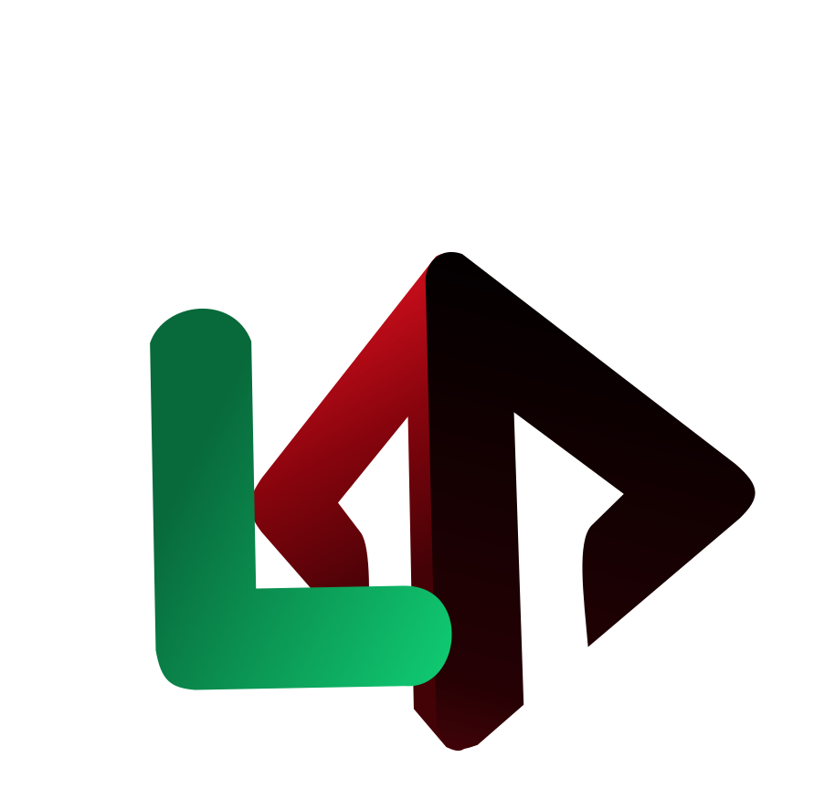
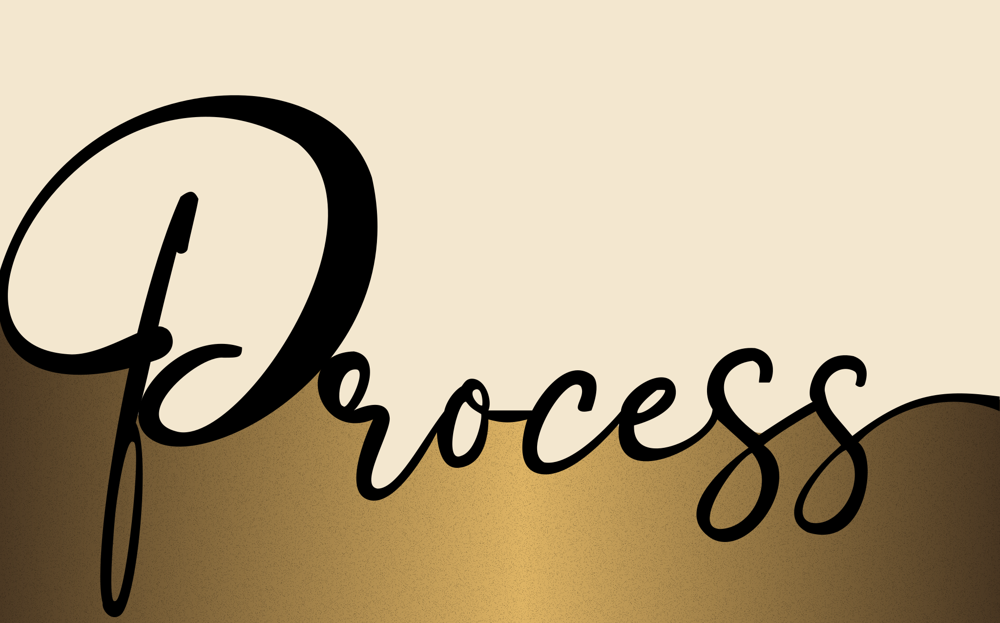

Clear Vision
You know what you want. You already have brand colors, references, and a direction. My job is to execute it with clarity and elevate the details.

A flexible, research-led, visually driven approach to building bold, functional, conversion-focused digital experiences.

I start by understanding the requirements and the client. Not every client starts from the same place, so I don't force a one-size-fits-all conversation.
You know what you want. You already have brand colors, references, and a direction. My job is to execute it with clarity and elevate the details.
You have an idea of what you want, and usually an even clearer idea of what you don't want. We refine fast by turning preferences into real visual constraints.
You want me to lead. In this case, I bring you visual options early so you can react to something real instead of abstract questions.
Abstract questions can be difficult to answer. Visuals are different: they trigger emotion, taste, and fast feedback. That reaction helps us find the direction quickly and confidently.
Even when a client can't clearly say what they want, they often know what they don't want. So I show a few visual directions, we eliminate what doesn't fit, and we build the right path step by step.
I gather based on feeling, useful UI details, and industry patterns. It's not about copying, it's about building a personal "direction library".
Emotion
Screens that instantly feel right.
Details
Small UI patterns worth reusing.
Industry
What "standard" looks like today.
Implementation
How features are commonly built.
Aesthetic
Beauty that stays functional.
Mood
Color + imagery that tells a story.
I use to experiment before I commit. It lets me test moods, hero concepts, and layout ideas at the speed of thought. I guide the tools, I curate the results, and I make the final call.
Tools I've used include Google Labs (Whisk, Flow), moodboards, and ChatGPT. I also keep build notes and progress visible in . AI is a multiplier, not a substitute for judgment.
My wireframing starts with , not boxes. I go deep into features, edge cases, and industry practices until the project becomes concrete.
Q: If we need an app for this, what features can it have?
A: We explore possibilities and choose what matters.
Q: What are the security challenges?
A: We identify risks early, not after launch.
Q: What industry practice am I missing?
A: We surface hidden requirements and standards.
Once the research is solid, I translate it into architecture, pages, and flows. That's when the design becomes robust instead of guesswork.
The is often the emotional anchor. It has to create a first impression and support conversion. Once the hero direction feels right, the rest of the page falls into place.
First Impression
Instant clarity, strong mood, clean message.
Conversion
A clear CTA and a path the user understands.
Consistency
Everything else inherits the hero's rhythm.
I explore early because it sets the tone. I don't want a site that feels generic. I want something memorable, incredible, and still functional.
Aa
Mood + rhythm
01
Hierarchy
( )
Detail
->
Flow
I'll reference type inspiration from real work in the wild, then refine it until it fits the project's voice. Bold doesn't mean chaotic. Bold means intentional.
To avoid the infinite loop of tweaking, I step away for a few days and return with fresh eyes. If it still feels strong and cohesive, it's close. If something feels off immediately, I know what to refine.
Build
Push details until the system feels cohesive.
Step away
Three to four days of distance creates clarity.
Return
If it holds up, ship. If not, refine the edges.
If you want a designer who can turn vague ideas into a clear direction, then build something bold that still works, let's talk.
Contact Me